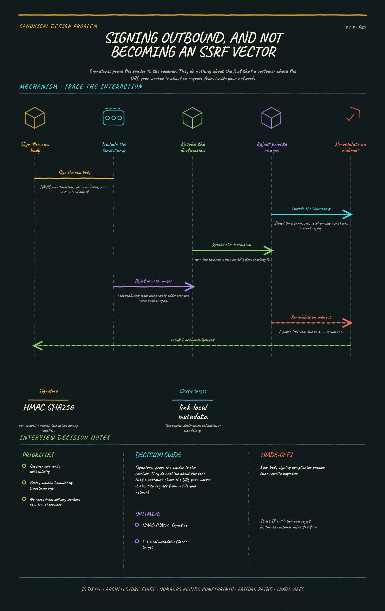

https://frosty110.github.io/js-drill/assets/system-design/infographics/design-problems/p29/signing-and-ssrf.pngDeliver events to thousands of customer-controlled HTTP endpoints reliably, when those endpoints are slow, down, or wrong. The signature challenge is that the receiver is outside your control, so the design is almost entirely about failure isolation and retry discipline.
All questions, model answers and diagrams for Design a Webhook Delivery System →